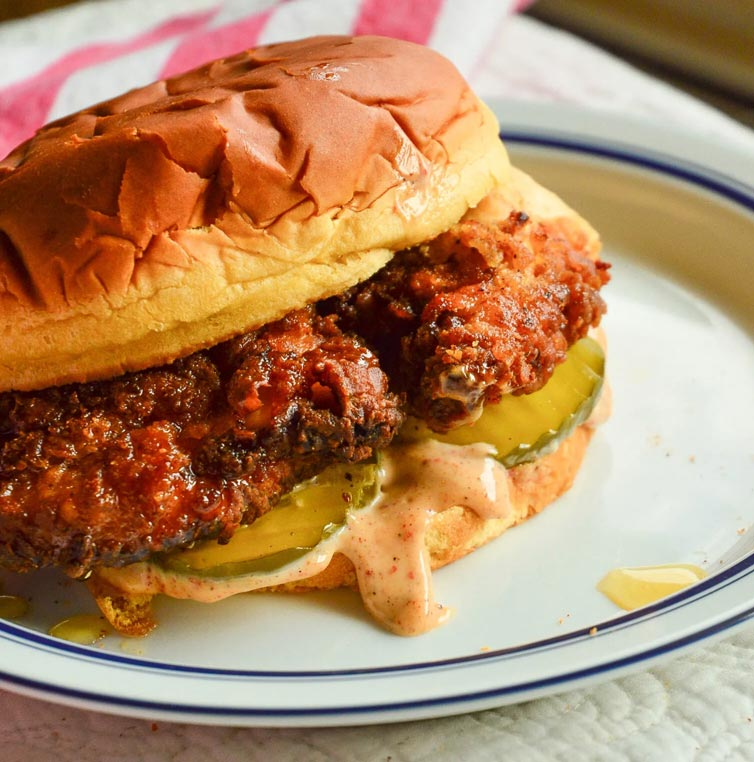

Cajun Chicken Sandwich
One of my go-to lunches! For those that are craving a Chic-fil-A or Popeyes sandwich!

Image by: Abbe
Ingredients:
- 1 Chicken Breast
- Cajun seasoning
- Smoked paprika
- Salt & pepper
- Honey
- FLour
- 1 Egg
- Cooking oil
- Sandwich bread
- Optional:
- Panko bread crumbs
- Pickles
- Honey mustard
- Mayonnaise
Directions:
- In separate bowls, put in the flour, whisked eggs, and panko.
- *If you would like to cook this in an airfryer, skip steps 3 and 7.
- In a large pan with some depth, heat oil until it starts to bubble
- Wash and cut the chicken breast in half, horizontally (to create 2 even filets)
- Massage your seasonings into the filets
- Coat the chicken in the flour, the eggs, then the panko (or back into the flour if you aren’t using panko)
- Put the chicken into the hot oil, and cook on each side for about 3 minutes or until golden brown.
- *For the airfryer, place coated filets inside and cook for about 10-15 minutes, flipping them halfway through.
- Place fried chicken on a plate with paper towels or on a rack to drain the excess oil.
- As soon as you take out the chicken, drizzle honey on top.
- Arrange your sandwich on the bread with whatever condiments you prefer.
- Enjoy!
Table of Contents
Recipes